An illustrated, nontechnical product handoff
Document version 1.0 · 6 November 2026 · Application reference: release
0.15
Stammbaum is a private workspace for maintaining family history together. It combines people and relationships with the evidence, uncertainty, original records and working notes behind them. A family tree is both a collection of information and a boundary for deciding who may see or change it.
This document describes the functionality available in the current application. It is intended for a product owner, designer or delivery team that needs to understand or recreate its behavior. It does not select a technology, prescribe an architecture or propose a Nextcloud redesign.
How to read this specification. Chapters 1–12 describe current behavior and its limits. Examples describe expected outcomes; they are not new test results. Appendix A provides acceptance scenarios, Appendix B preserves links to requirement identifiers, and Appendix C identifies the evidence used. The broader approved specification includes work that is still unfinished: inclusion there does not establish that a feature is available today.
All people, accounts, documents and media in the examples and screenshots are fictional. The screenshots are from the running release 0.15 application, captured on 31 October 2026. Some show the German interface; their captions explain the relevant behavior in English. They illustrate functionality rather than prescribe a pixel-for-pixel design. Bright magenta areas deliberately conceal test passwords and credentials.
Stammbaum serves a small, closed group researching and maintaining family history. A reader can explore a branch and inspect its evidence. A contributor can add relatives, correct a date, attach a document or record an alternative explanation. A tree manager controls membership, confidential information and reviewed imports. An installation operator maintains access and recovery for the application.
The current feature set supports these end-to-end activities:
An account with a commercial genealogy service is not needed for ordinary use. Existing information can be entered manually or transferred through the supported file-import workflow. The application does not automatically search commercial records or discover relatives.
Unknown information remains unknown. A missing parent, incomplete date or unknown living status does not authorize the application to invent a value. A relationship label is explicit information, not a conclusion drawn from a name or sex.
Presentation and historical judgment remain separate. The name or date chosen for a card can still be disputed. A neatly displayed tree is not a claim that all its information is certain.
Original material and current research have distinct roles. An imported original is retained unchanged. Corrections affect the current research record while preserving its connection to the original. A fresh export describes current research within the export format's limits.
Access applies to the whole operation. Permission to see a person does not necessarily permit reading a shared citation or changing a shared event. Every affected record matters.
Actions have specific consequences. Removing a connection, deleting a person, detaching a photograph and deleting its media record are different actions. The interface must communicate which action is being taken.
Changes must not silently overwrite one another. When the information changed after a form was opened, the user's draft is retained for comparison and deliberate reconciliation.
A user account identifies a collaborator. A person record describes someone in family history. Creating a person does not create an account, send an invitation or grant access. Several people may have the same name. The same real individual can be recorded independently in two trees; those records do not synchronize.
The application currently offers a substantial working subset of its approved long-term scope. The limitations in Chapter 12 are part of this handoff, not suggestions to silently remove unfinished obligations from the original specification.
The first account is created through a one-time installation setup process. There is no permanent default password. Subsequent collaborators join through invitations; there is no open public registration journey.
A user can sign in, sign out, change their password and save their interface-language preference. A password change requires the current password and signs the user out. An operator can issue a single-use recovery link when a password is lost. A recovery link lasts 30 minutes and does not grant new tree memberships. Application restarts require browser users to sign in again.
Repeated sign-in, invitation, password and recovery attempts can be temporarily refused when protective limits are reached. These limits use 15-minute windows. The refusal does not delete an account or its research, and retrying repeatedly is not a way to bypass it.
Operators can inspect account status, enable or disable accounts and review account/security activity. Disabling an account preserves its contributed information and attribution. The application protects the last active operator and the last active owner of a tree against changes that would leave those responsibilities unassigned. Full account provisioning and administration beyond the implemented controls remain unfinished.
A user may be an owner in one tree and a viewer in another. Roles are not inherited across trees. A new tree's creator becomes its owner.
| Action in the current application | Viewer | Editor | Manager | Owner |
|---|---|---|---|---|
| Read and search permitted genealogy | Yes | Yes | Yes | Yes |
| Save own view and personal home person | Yes | Yes | Yes | Yes |
| Add/edit permitted people, relationships and evidence | No | Yes | Yes | Yes |
| Add/edit permitted events, notes and ordinary details | No | Yes | Yes | Yes |
| Upload/edit permitted media and its assignments | No | Yes | Yes | Yes |
| View management-only content | No | No | Yes | Yes |
| Change content visibility; maintain confidential contacts | No | No | Yes | Yes |
| Rename tree or change its description/shared home | No | No | Yes | Yes |
| Review, confirm or cancel imports; retrieve original imports | No | No | Yes | Yes |
| Upload/review media packages and match missing references | No | No | Yes | Yes |
| Delete media records; delete or restore people | No | No | Yes | Yes |
| Export permitted information | Separate grant | Separate grant | Yes | Yes |
| View member directory and tree access activity | No | No | Yes | Yes |
| Invite or manage viewers/editors | No | No | Yes | Yes |
| Appoint or change managers/owners | No | No | No | Yes |
| Configure tree change notifications | No | No | Yes | Yes |
| Leave the tree | Yes | Yes | Yes | Unless last active owner |
“Yes” always remains subject to record visibility and shared-record checks. For example, an editor cannot edit a source whose existing citations include inaccessible information. A manager cannot alter another manager's grant or their own manager grant. An owner can manage all role levels but cannot remove the final active owner.
Any signed-in active account can create a new tree. That ability is separate from the role held in an existing tree. The installation operator has no automatic right to view or edit a tree through the application. The operator's responsibility for the installation and its backups should not be confused with a promise that the host operator is technically unable to access stored information.
Content is either available to tree members or restricted to management only. New ordinary person records default to tree-member visibility. Contacts and religious-affiliation details are confidential. Managers and owners control visibility changes. A newly uploaded medium starts management-only for a manager/owner and member-visible for an editor.
Living status has three values: living, deceased and unknown. It is distinct from visibility. Deceased people are not automatically public. Living and unknown-status people can be visible to authorized members inside a closed tree, but both categories are omitted from exports by default.
A restricted person is excluded from unauthorized search results and diagrams. The application does not reveal them through a named placeholder or use them as a hidden connection between otherwise visible people. Home-person settings cannot expose an inaccessible person's identity.
Shared citations and media require access to every relevant linked target. If a citation is attached to a visible person and an inaccessible person, the reader cannot see the citation merely because one attachment is visible. Historical private material remains protected even if the current person becomes visible to more members.
Viewers and editors need an additional export grant. Managers and owners have export rights through their roles. Downgrading a manager or owner starts with the separate export permission unchecked; the person changing the grant must deliberately decide whether to retain export access.
Export permission permits only the information the user is currently allowed to see. It does not turn a viewer into a manager or reveal confidential records. It governs Stammbaum's export functions; it cannot prevent someone from copying information already displayed to them.
Acceptance example. An editor can correct a visible birthplace and attach an ordinary photograph. The same editor cannot change that person's visibility, inspect a management-only contact record or delete the person. Giving the editor export permission adds export capability without adding those management rights.
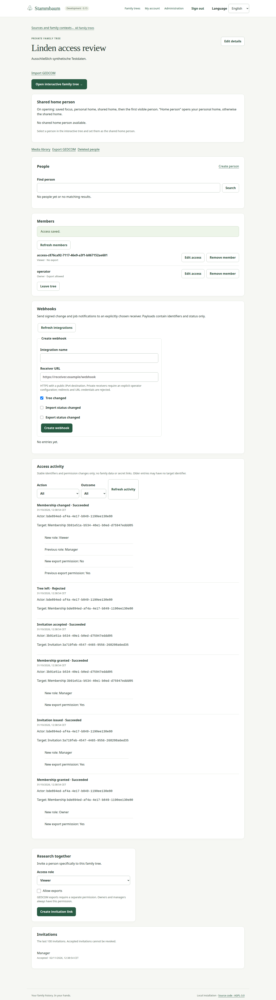
The family-tree list contains the trees accessible to the signed-in user, with their name, description, own role and available actions. A tree needs a name; its description is optional. Equal names are allowed and the interface supplies a short distinguishing identifier. Creating a tree creates an empty private workspace, not a sample family.
Owners and managers can edit tree details. A tree's management page links to its people, evidence library, interactive workspace, import, media and export areas. Management-only controls include members, invitations, access activity, deleted people and notifications. Available controls follow the user's actual permissions.
An empty tree supports creating its first person or, for management, reviewing a GEDCOM import. There is no implemented merge-into-existing-tree journey or full-tree deletion workflow.
People can be searched by their authorized names, including alternative names, and display notes. The current search finds matching text without case sensitivity. It does not promise spelling correction, fuzzy matching or equivalence between forms such as “ä” and “ae.” Results are loaded in pages; the first loaded page is not the whole tree.
A search result can be selected even when it lies outside the displayed branch. The details panel indicates that situation. The user can then explicitly make the person the focus of a new branch. Finding a record does not create another copy of it.
Four concepts remain distinct:
| Concept | User meaning | What changing it affects |
|---|---|---|
| Focus | The person around whom the branch is built | Which relatives the diagram includes |
| Selection | The person currently being inspected | The details panel and available actions |
| Home person | A saved starting person | Where the Home action goes |
| Camera/view | Diagram mode, generations, zoom and position | How the branch is presented |
Selecting a card or search result opens details without changing the branch or camera. Show family branch changes the focus and centers that person while retaining zoom. Previous branch returns to preceding branch states, including their focus, selection, generations and camera. Up to 30 preceding branch entries are retained.
The user can choose family, ancestor or descendant view. Upward and downward generation depths are separate, from zero through eight; their initial values are three and two. Family view includes visible partners and focus siblings where the supported relationships or family contexts establish them.
The diagram shows each person once. Additional paths point to the same person; repeated ancestors do not become duplicate records. Different parent relationships and partnerships use distinguishable line styles and a text legend. Connections that do not fit ordinary generation rows have an explanatory reference style.
Users can drag the diagram background, use zoom buttons, fit the view, zoom around the pointer with the mouse wheel and use supported two-finger gestures. Keyboard arrows move the camera; plus/minus zoom and Home fits the diagram when the diagram has focus. These actions do not resize the details panel or change genealogy.
A text view provides the displayed people and relationship types as navigable text and buttons. It is an alternative to the diagram, not another dataset. A selected boundary person can be expanded locally, or made the focus to explore a different branch.
The current view is bounded at 200 unique people and 1,000 relationship lines. A limited-view message explains when the full requested neighborhood cannot be displayed. There are also limits on local expansions and the number of neighboring records inspected; see Chapter 12. A limit is not evidence that excluded relatives do not exist.
Each account has separate saved views and a personal home person for each tree. Viewers may change their own navigation preferences without gaining editing rights.
Managers and owners can set or clear the tree's shared home person. On opening a tree, an accessible saved focus takes precedence, followed by personal home, shared home and the first visible person. The Home person action uses personal home first and otherwise shared home. Clearing personal home lets the user follow the shared default without erasing their saved camera or branch history.
Changing the shared home does not overwrite other people's preferences. If the stored person is no longer accessible, the interface uses an authorized alternative or reports unavailability without revealing hidden details. A copied view link requires authorized sign-in; it is not a public share link.
Saving an edit or a newly connected relative from the workspace returns to the prior focus and camera, with the saved person selected. A failed diagram load exposes a reload action instead of presenting an old drawing as a successful fresh result.
Acceptance example. Ada is the focus. Selecting Clara shows Clara's details while Ada remains the focus. Choosing Clara's family branch changes the branch; Previous branch returns to Ada's former view. Neither action changes the family records.
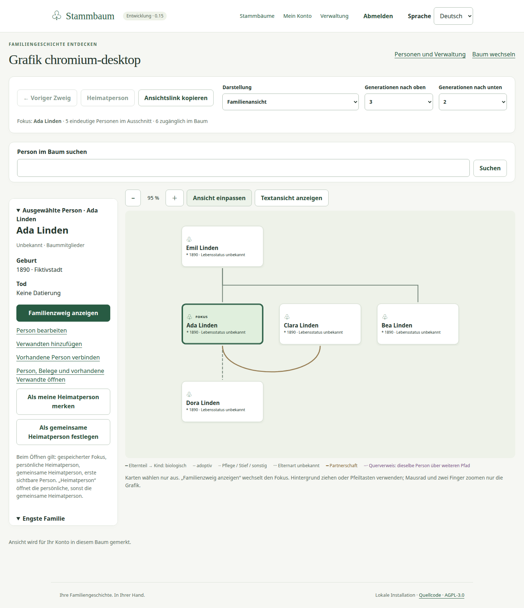
Editors, managers and owners can create and edit people they are allowed to access. The basic editor records given name, family name, a display note, living status, sex, visibility, birth and death dates/places, and a note explaining the change's provenance. Sex offers female, male, unknown and another recorded indication; it does not determine a parent or partner role.
Unknown living status and sex are valid starting values. A person can have an incomplete name. Creating someone with neither given nor family name requires explicit confirmation; the application does not fabricate a surname. An empty birth or death section does not create an invented event.
Person details bring together life dates, events and notes, claims and evidence, family contexts, current connections, assigned media and available history. The preferred biography and preferred portraits are presentations of linked records, not replacements for those records.
Correcting a preferred name, date or place retains the earlier assertion and its evidence links. An unchanged value does not create an artificial alternative. Clearing a date or place makes the current preference empty while retaining the previous information for research and history.
Dates support the following distinctions:
| Date form | Meaning and example |
|---|---|
| Exact or partial | A known day, month or year: “1890-03-12,” “1890-03” or “1890” |
| About | Approximate date, such as “about 1890” |
| Before / after | A boundary without a claimed exact date |
| Between | An event occurred somewhere between two dates |
| From / to | A period, including an open start or end where supported |
| Calculated | A date derived by calculation, kept distinct from direct evidence |
| Estimated | A research estimate |
| Literal wording | Text whose meaning should remain uninterpreted, such as “03/04” |
Structured date entry uses year, year-month or year-month-day. Impossible calendar dates are rejected. Partial dates remain partial: a year-only date does not acquire January 1. Historical wording remains visible. Ambiguous dates, dates before the common era and other calendars can be retained as literal wording; there is no automatic historical-calendar conversion.
Birth/death contradictions produce explanatory findings without silently changing either assertion. For example, living status can conflict with a recorded death, or a precise death date can precede a precise birth. These findings are not a complete research-quality case-management system.
Places retain entered or imported wording. A place and an address are distinct information. No automatic map lookup, geographic normalization or geocoding is provided.
From a person or the workspace, choose a new relative or search for an existing person. Specify whether the connection is parent, child or partner. Parent relationships explicitly distinguish unknown, biological, adoptive, foster, step and other.
Creating a new relative and its connection is one operation: either both become available or neither is created. Connecting an existing person reuses that person. Multiple parents and partners are supported. An additional partnership episode needs explicit confirmation.
Names, sex and partnership do not imply parenthood. Two people being parents in the same grouping does not itself establish that they were partners. Recording a shared marriage event and creating a partnership connection are distinct operations.
The application refuses self-connections, duplicate active exact parent connections, connections across different trees and biological ancestry loops that would make someone their own ancestor. Repeated ancestors through different legitimate branches are permitted. Nonbiological loops are handled as references in the diagram; a broader social-loop warning system is unfinished.
Removing a connection keeps both people. It does not record a divorce, separation or death. The people and their other connections remain available, and evidence/history is retained subject to its visibility rules.
A family context groups existing people with parent/child roles, optional role descriptions, a label, visibility and explicit child order. It can reference existing parent or partnership connections. A person can participate in more than one context, but appears only once within a particular context.
Contexts support siblings whose parents are unknown: create the people, then group them in child roles. No placeholder parent is invented. Grouping never creates parent relationships or a partnership automatically. Half-siblings and different parental circumstances can be represented through the actual connections and separate contexts.
Child order is a recorded research choice. Displaying a family does not silently rewrite it by date. An inactive relationship can remain visible as historical information in a context; editing that context offers active relationship choices and drops inactive context references on saving, without deleting the underlying history.
There is no dedicated comprehensive sibling-creation wizard or automatic family reconstruction. Users work with the existing relative editor and context controls.
Acceptance example. Two fictional siblings have no known parents. An editor creates their records, places them in a family context as children and orders them. The resulting context contains those children and no invented parent or partnership.
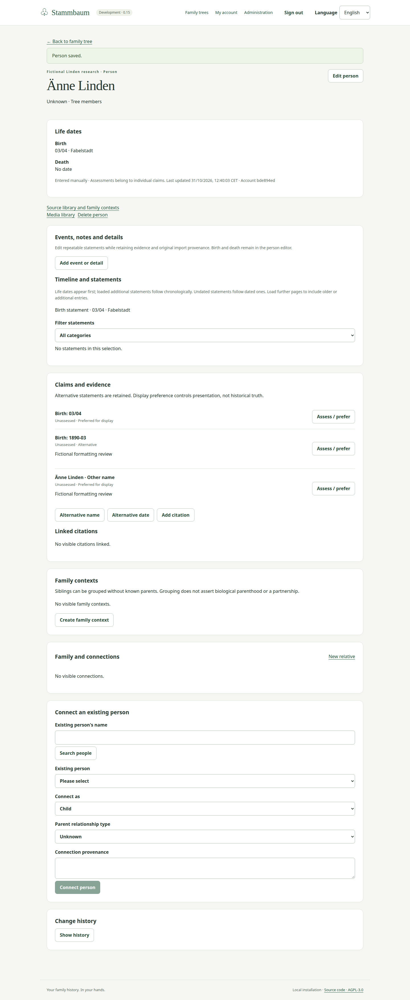
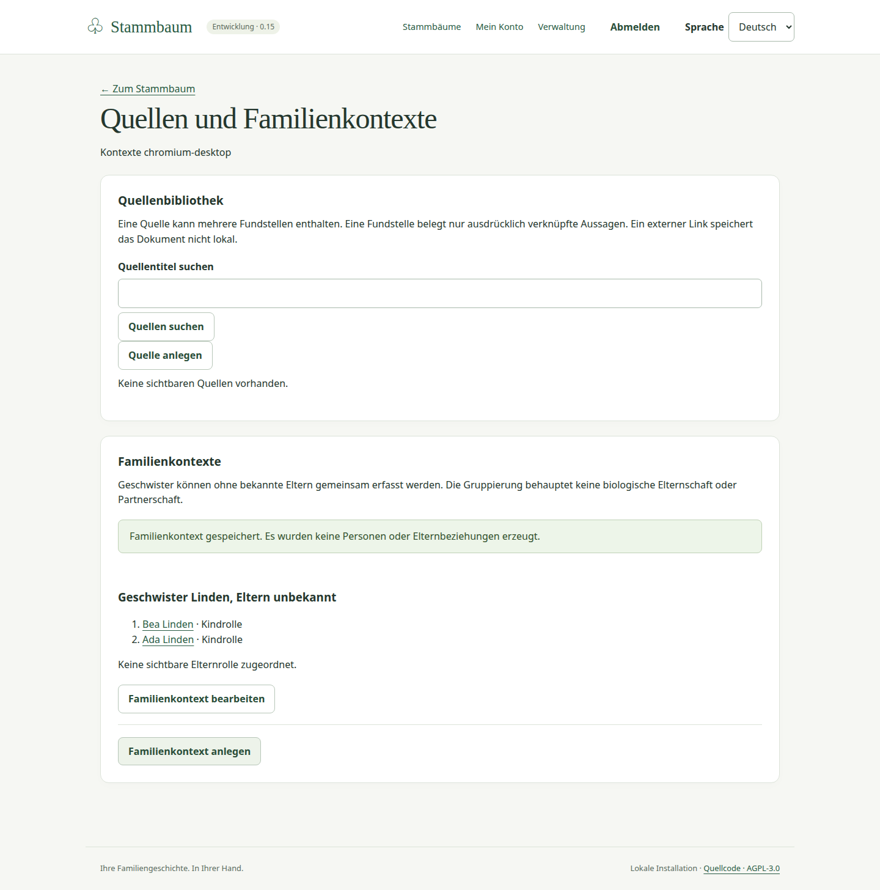
A source is a reusable description of underlying material: a register, certificate, book, interview or other research source. Its fields include title, type, author, publication information, repository, call number, external address, description and visibility. Users can search source titles, create/edit sources and browse their citations.
A citation identifies a particular passage or reference within a source. It can record a page or other locator, literal quotation/transcription, external address, document date, separate access date, reliability and reasoning. Reliability can be unassessed, low, medium or high; it is not automatically a verdict on every claim using the citation.
A citation can refer to a person generally or target particular names, birth/death date or place assertions, connections and supported statements. Each specific target can be a general reference, support or contradiction. Person-level references are general references, not evidence that every statement about that person is true.
One citation can serve several claims or people. Reusing it preserves one shared citation. Detaching one target retains the source, citation and its other targets. Unattached citations remain discoverable through their source. Editing a citation from one person's page must retain its targets elsewhere, including those outside the currently loaded page.
An external source address is a link, not a locally preserved document. The application does not fetch it automatically. To preserve a supported document locally, upload it through the media library and explicitly assign it.
People can have alternative birth names, married names, aliases and other names, and alternative birth/death dates. An assertion has its own assessment: unassessed, supported, disputed or rejected.
Choosing a preferred display value and assessing its historical credibility are separate decisions. A disputed or rejected assertion can remain the display preference. Adding a citation does not automatically change an assessment. A correction does not erase older cited values.
Example: a register suggests a birth in 1890 while a later document says 1891. Both can be retained with their own evidence. The researcher can display 1890 and mark it disputed, with an explanation. The application does not vote between sources or invent a certainty score for the entire person.
The current alternative-assertion editor does not extend to every possible competing event or relationship hypothesis. Multiple events and multiple relationships can exist, but a complete system for grouping mutually exclusive event/relationship explanations is unfinished.
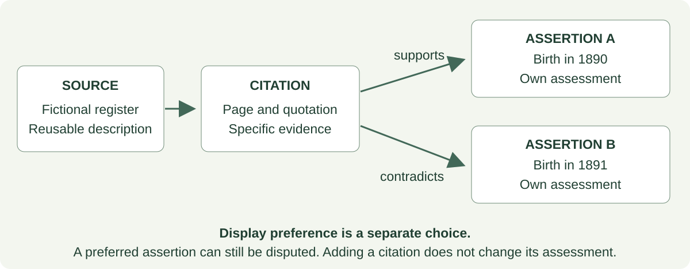
The reader must be entitled to the citation's source and all its targets. If one dependency is inaccessible, the citation is withheld as a whole, including its quotation and target list. An editor cannot change a source when doing so would affect inaccessible citing material.
Changing current visibility does not retroactively expose private historical assertions. A private alternative cannot simply become the preferred assertion visible to all tree members; an explicitly released assertion is needed. Authors also need to choose appropriate visibility for the wording of independently authored source or context labels.
No general deletion/purge interface for sources, citations, alternatives or family contexts is currently supplied. Editing, target detachment and context membership changes have narrower consequences and must not be described as permanent deletion.
Acceptance example. A citation supports one recorded date and contradicts another. Marking the first date preferred changes the card's display but not either citation effect. Removing the second target leaves the citation linked to the first date.
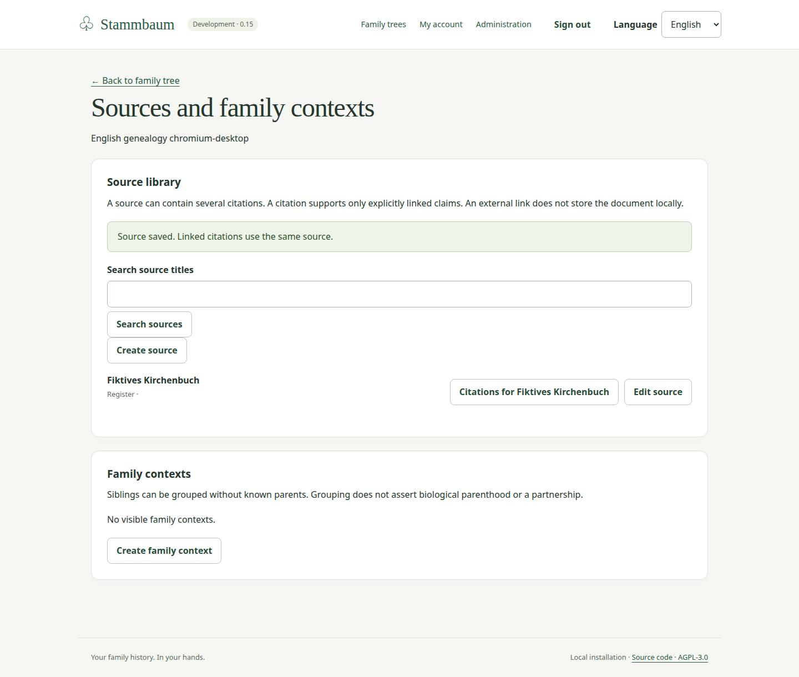
Editors and above can add or edit supported events and details for accessible people. Available event choices include marriage, civil marriage, separation/divorce, adoption, military service, occupation, education, residence, migration, baptism/burial and explicitly labelled custom events. The broader imported-event vocabulary also includes records such as census, probate, wills and other supported religious or life events.
An event/detail records its category and type, title or custom designation, description, date, place, visibility, structured fields, participants and provenance. Birth/death card values and their alternatives continue to be maintained through the person/evidence editor. Imported birth/death statements remain identifiable; they are not silently replaced by an unrelated event.
Events can repeat. One shared event can have multiple participants, each with a role, including a custom role. It appears in each participant's timeline as the same record. Saving asks the user to confirm the affected people. Editing requires access to all affected participants and shared evidence; the original person or family-context association cannot silently disappear. Additional participants may be removed explicitly.
A current/ongoing flag is supported and cannot be combined with an explicit end date. Dates can remain partial, approximate or open-ended. The application does not infer missing start or end dates.
The timeline shows life dates first, then loaded additional records by date, with undated entries after dated entries. Further pages must be loaded when offered. It is a view of loaded records, not an unlimited, globally sorted chronology of the entire tree.
Entries expose available dates, places, text, participants and a route to their sources/citations. Age is shown only when the necessary exact full dates are compatible. Approximate years do not produce a falsely precise age.
The optional relatives' life-events view adds marked context from loaded visible relationships. These entries remain relatives' events; showing them does not save extra events on the selected person.
Notes have a title, text and visibility. Basic formatting supports paragraphs, emphasis, bold text, lists and deliberate links. HTML and embedded-image instructions are displayed literally rather than executed or loaded. Opening a note does not fetch external resources.
A person can have several notes. Selecting one as the preferred biography controls the main narrative presentation; other notes remain separate. Imported notes retain their original provenance when corrected.
Contacts and attributes can repeat. Structured fields preserve values, their labels, units and ordering, including name components, address parts, organization or qualification information where supported. These are not collapsed into a single undifferentiated text field.
Contacts and religious affiliation remain management-only. A genealogy email address does not create an account, issue an invitation or send a message. Leading zeros and literal wording in contact information are retained. Imported contact/address information may conservatively restrict its containing person or family record to management; the import review explains that treatment.
An imported statement's primary wording and recognized detail fields can be corrected separately. The original file, original structure, provenance and citation targets remain retained. Imported type/category/subject are not freely reassigned. Values outside the supported editing limits remain readable but may be read-only. Changing a name-components detail does not silently change the separately preferred display name.
Switching interface language preserves the open draft. Cancelling or leaving an open statement prompts before discarding unsaved entries. A concurrent change retains the draft and requires loading current information, comparison and explicit acknowledgement before retrying. Saving a shared event is its own completed action; cancelling a different form does not undo it.
Acceptance example. A researcher records one fictional marriage with two participants. Both timelines show that event. Correcting its place updates the shared record for both. No duplicate marriage is created, and the old import wording remains available as provenance where applicable.
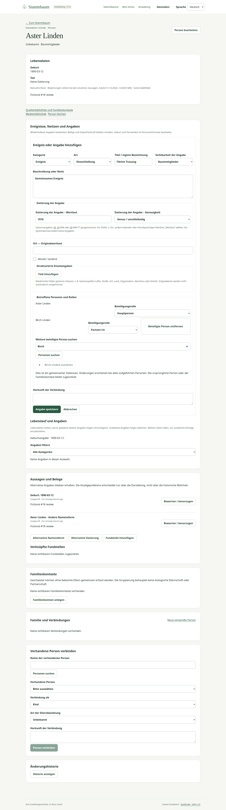
The media library stores private JPEG/PNG originals and PDF attachments. A file may be at most 10 MiB; images also have dimension and pixel-count limits. PDFs are downloadable attachments, not an inline document viewer. Other formats require conversion outside the application.
Editors and above can upload media and maintain metadata they are authorized to change. Metadata includes title, description, visibility, capture date and digitization date. Those dates are separate from upload time and can retain historical uncertainty.
Image previews do not replace originals. Downloading an original retrieves its unchanged stored bytes. Previews omit original embedded metadata. The application does not promise automatic interpretation of camera orientation or source-system portrait/crop settings.
One medium can be assigned to multiple people, events, details, sources, citations or family contexts. Each assignment has a meaning. A person assignment can be designated a preferred portrait and can carry a reversible crop for presentation.
Cropping changes the preview presentation, not the original file. Clearing the crop restores the full-image presentation. The portrait is currently shown on the person page; tree diagram cards retain their existing neutral portrait symbol.
Reading a shared medium requires visibility of the medium and every linked target/dependency. Linking it to a confidential record may therefore prevent an ordinary member from viewing it through another visible assignment. Editors cannot use an accessible assignment to bypass that restriction.
An imported filename or external address is a reference, not proof that a file has been obtained. Missing and external references remain distinguishable from verified local files. The application never automatically downloads media from those addresses.
Managers and owners can upload a bounded ZIP package, review its candidates and explicitly match a candidate's full path to a missing or external reference. Equal filenames in different folders do not produce an automatic match. Successful matching preserves the original reference while attaching verified stored bytes.
The package limit is 32 MiB compressed, 100 entries and 128 MiB expanded, with a 10 MiB limit per file. Invalid or unsafe package contents are rejected as a whole rather than partly imported. No instruction file inside a package is executed.
Detaching a medium from a person removes that association only. It does not delete its other assignments or its original file. Changing a portrait preference or crop is also separate from deletion.
Managers and owners can delete a media record from active use. Original bytes are retained; this is not permanent erasure of storage or backups. Shared originals and retained package candidates can still consume the logical storage allowance. The current application does not provide automatic broad physical cleanup.
Acceptance example. One photograph is assigned to two fictional relatives. Cropping its portrait presentation for one person does not alter the original download or the other assignment. Detaching it from that person leaves the other assignment intact.
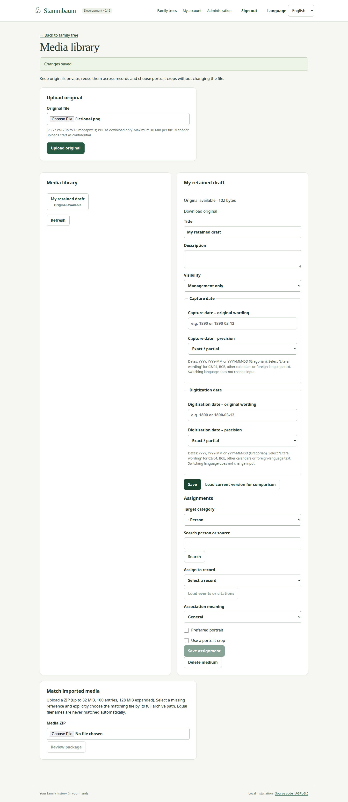
GEDCOM is a family-history exchange format used by genealogy applications. It can describe people, relationships and supported research information, but it does not represent every Stammbaum behavior.
| File or output | What it represents | What it does not promise |
|---|---|---|
| Original import download | The unchanged file that was uploaded | Later corrections or the current tree |
| Current GEDCOM export, optionally with media ZIP | Today's authorized research within the supported exchange profile | Full history, access rights or complete application restoration |
| Operational backup | The information and private files needed for installation recovery | A portable interchange file for another genealogy application |
A complete portable tree archive is not currently implemented. A generated PDF of this specification is documentation; it is unrelated to the unfinished genealogy diagram-PDF feature.
Only a manager or owner can upload, review, confirm or cancel an import and retrieve its original. The destination must be empty of genealogy records, including standalone sources. A tree with members or navigation settings is not necessarily populated, but a tree already containing research cannot receive an additional import.
The current bounded profile accepts GEDCOM 5.5/5.5.1 with UTF-8, ASCII or explicitly identified UTF-16 text. It does not accept ANSEL, legacy Windows encodings, GEDCOM 7 or a ZIP as the genealogy input. The maximum GEDCOM size is 8 MiB and the maximum imported population is 2,000 people.
Supported content includes names and name components, life dates and places, explicit family connections and ordered contexts, notes, sources/citations, selected additional events/attributes, contact details and media references. Preserved extension text is not necessarily interpreted as an editable feature. A narrow adoption-event combination is supported; arbitrary adoption encodings are not.
There is no blanket guarantee that any file exported by MyHeritage or another application can be imported completely. Unsupported standard information blocks activation. Unsupported vendor material can remain preserved with warnings, without being promoted to historical claims. The exact import profile and reported limitations are part of the user's review.
The report distinguishes information mapped into research records, normalized information and material preserved structurally. Complete issue totals accompany a bounded display of up to 200 individual issues, prioritizing errors, and up to 20 preview people. A short list is not a claim that only those records were analyzed.
Missing media are reported separately. They must not be described as successfully available photographs. Source-system matching or discovery labels are retained as source wording; they do not automatically establish events or evidence quality.
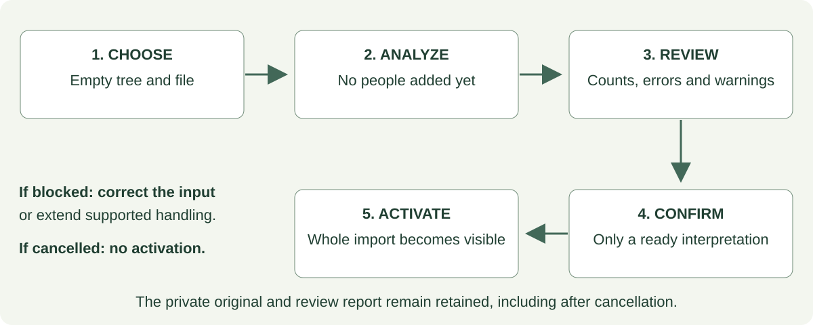
A blocked review cannot be activated. The user needs a corrected file or an extended supported profile; the application must not silently discard an unsupported standard field to get past the block. Invalid text is rejected rather than replaced with invented characters.
Confirmation refers to the exact reviewed file, interpretation and destination state. Changes to the tree or loss of the confirming user's authority can prevent activation. Successful activation publishes the complete imported set together. Readers do not see half an imported family.
Cancelling before completed activation does not create the proposed people. It retains the private original and report. Cancellation is not an undo operation for a completed import. Interrupted work and retained job status are handled separately from the user's choice to start a new import.
Uploading the same file again to the same tree under the same import profile returns the existing run. This also applies to a cancelled or failed run: a general reanalysis/resume interface is unfinished. Creating an independent copy requires a different empty tree.
Original bytes, the original ordered structure and connections to resulting records remain retained after corrections. The current research does not silently rewrite the original. Historical import runs retain their own interpretation profile; later profile changes do not retrospectively reinterpret a previously reviewed run.
Users with export rights open GEDCOM export and choose options. By default, living people, people with unknown living status and management-only information are omitted. Authorized users can deliberately include living/unknown people; management-only inclusion additionally requires a manager or owner. An optional ordinary media ZIP can include authorized local originals.
The preview shows included counts and the supported format's limitations. Counts do not reveal exact hidden populations. Shared records depending on excluded people or targets are excluded too. Export choices do not change the tree's stored visibility or living status.
The user acknowledges the limitations before creating an export job. It can be revisited after navigating away. When it completes, the requesting user can download the permitted result. Results expire after 24 hours. A queued job can be cancelled before publication; failed work requires a fresh review and export rather than an unrestricted automatic retry.
Any tree edit or relevant access change invalidates an older result, even when the change would not obviously affect the file. Regaining permission does not revive it. The user must review and generate a fresh export. One user's export job is not a general download facility for every tree member.
The output uses GEDCOM 5.5.1 and current preferred values, current edited statements and active relationships. It does not append obsolete imported wording to reconstruct deleted people or removed connections. Superseded preferred names and rejected alternatives are excluded; eligible active alternative names can be included. Choosing an older assertion as preferred can make it current again.
When a birth or death appears both in the person's preferred life information and in an edited event statement, export uses the most recently updated representation and emits its date/place once. It does not combine an obsolete raw event with a newer preferred date. An “other” sex indication becomes unknown in this exchange format, with the normalization reported.
Repeated events, supported date precision, sources/citations and supported adoptive/foster relationships can be represented. Where the destination format cannot express meaning directly, the report identifies normalization or omission. Examples include complex parent constellations, some participant roles and structured fields, step/other parent meanings, portrait crops, preferred-portrait flags and explicit living status.
History, access permissions, full competing-claim semantics, audit activity and complete application settings are not a GEDCOM archive. Some source/citation meanings and media metadata also lack exact portable equivalents. Only a narrow category of unchanged vendor extension values can be carried through; retaining an original does not guarantee every extension will be regenerated.
The media ZIP is an ordinary package with genealogy, report information and included originals. It is not GEDZIP or a full restoration archive. An export can contain more media than one allowed input package, so transfer may require splitting media into bounded packages.
Acceptance example. A manager imports a supported file, changes a person's preferred name, removes a parent connection and deletes another person. A fresh export reflects those current choices. Downloading the original still returns the unchanged original file. Neither output is mislabeled as the other.
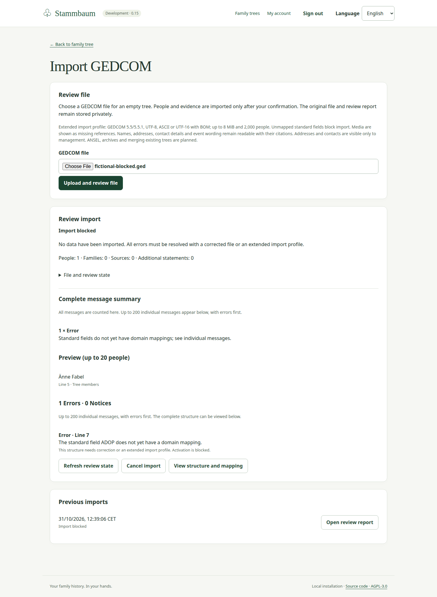
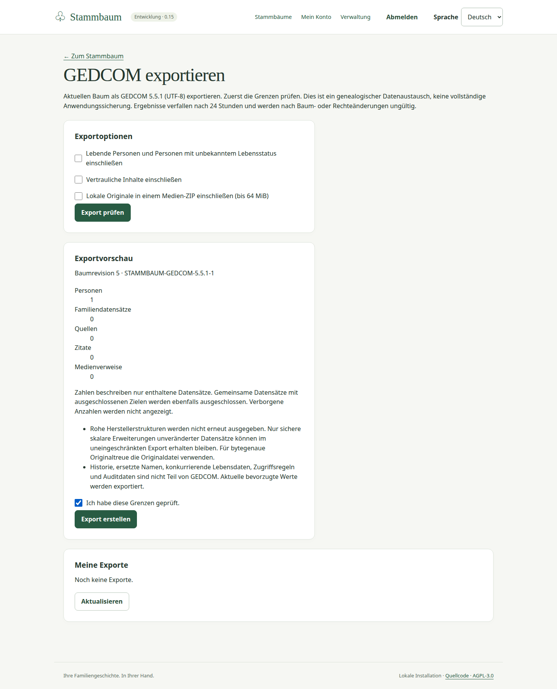
A manager can invite viewers or editors; an owner can invite all role levels. The invitation identifies the tree, role, export permission and expiry. The generated link is single-use and lasts 48 hours. The user shares it deliberately; the current workflow does not depend on automatic email delivery.
The recipient reviews the invitation and explicitly accepts, creating an account or using an existing account as appropriate. Possessing the link is not the same as anonymous access to the tree. Invalid, revoked, expired or already consumed links do not grant a fresh membership.
Owners and managers can review members within their role boundaries. Role/export changes and removal require confirmation. A stale grant cannot overwrite a newer grant; comparison retains the proposed edit. Any member can leave, except that the final active owner must first appoint another active owner.
Changing or removing a membership revokes outstanding invitations issued by that member. Fresh invitations are required if still needed. A removed member's genealogy and attribution remain. An old invitation or previously opened form does not regain authority merely because the person later rejoins.
Forms are based on the version the user opened. If another user saves first, the later attempt does not overwrite it silently. The application retains the draft, explains the conflict and offers current information for comparison. The user reconciles the differences and deliberately retries. Some editors, including shared statements, require an explicit comparison acknowledgement.
Loading current information is not an automatic merge. It must not be represented as evidence that every difference has been resolved. Personal navigation preferences also detect changes from another tab, with explicit reload or overwrite choices after checking the current version.
An interrupted connection may leave the user uncertain whether a save completed. Supported create workflows recognize a repeated unchanged request rather than creating a duplicate. The interface does not indiscriminately replay every failed write or promise that an unsaved draft survives closing the browser. Changes made after access is withdrawn must be refused even if the form was already open.
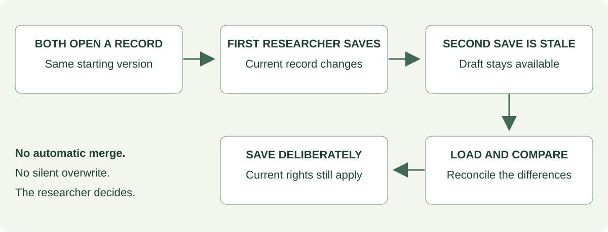
Person history exposes available revisions and attributed changes, subject to current access and historical confidentiality. A provenance note explains an operation; it is not automatically a formal source or citation. History is loaded in pages, and ordering of loaded entries must not be confused with a complete chronological history loaded all at once.
The interface is not a general undo system. Dedicated history/undo browsers for every source, citation, family context and relationship are unfinished even when underlying changes retain attribution.
Tree access activity is available to current owners/managers. It records actions, outcomes, timestamps, stable actor/target identifiers and relevant role/export changes. Users can filter by action and outcome, refresh and load further entries. It contains no family narrative or password/secret contents. Older entries may have an unknown target rather than an invented attribution.
Installation account/security activity is separate and restricted to operators. Operator status alone does not reveal tree activity. Access records are retained for the installation's lifetime by default; a user-facing configurable audit-purge facility is not provided.
Managers and owners review the impact before deleting a person. Deletion removes the person from active searches, diagrams and exports, deactivates active relationships and clears a matching shared home. Shared sources, statements, events and media remain retained rather than being broadly erased.
The deleted-people area lists the latest 100 deletions and offers restoration. Restoring brings back the person, not their former active connections. Those connections must be reviewed and explicitly recreated; normal ancestry checks still apply. This avoids automatically reviving old errors or inappropriate links.
Deletion is not permanent erasure. Original imports, retained media and backups may still contain the information. Configurable physical purge, selective relationship restoration and whole-tree deletion are unfinished.
The operator is responsible for preserving the application information, private originals and necessary recovery material together. Encrypted backup and isolated restoration procedures exist. A recovery must preserve the research, retained originals, assignments and history as a consistent set.
Restoration invalidates old access credentials and links under the documented recovery behavior. Old external-tool credentials do not automatically become usable again merely because their records were restored. Recovery is not a user-facing “import this GEDCOM to restore everything” operation.
There is no automatic backup schedule simply because the application is installed. Scheduling, protected retention and recovery responsibilities must be arranged by the operator. This document defines those responsibilities without prescribing the technology used to fulfill them.
Acceptance example. Two researchers edit the same occupation statement. The first saves. The second sees a conflict, keeps their draft, loads the saved wording and decides how to reconcile it. The application does not choose the historical interpretation for them.
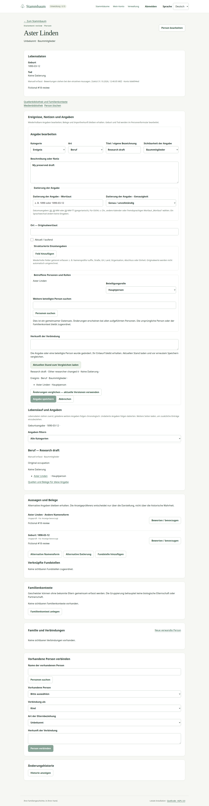
Implemented interface screens, application errors and new saved import diagnostics support English and German. Before sign-in, an explicit browser choice takes precedence over the browser's preferred language; German is the fallback. After sign-in, the saved account preference applies. Existing and newly created accounts start in German until changed.
Changing language preserves the route, selection and open drafts. Concurrent changes to language preferences are handled explicitly rather than silently overwriting another session's choice. Old saved reports without translation information retain their original German wording and are labelled accordingly.
Research content is not translated automatically. Names, notes, quotations, source titles, place names and original date wording remain unchanged. Generated presentation labels can change language, but deliberately saving authored text makes that wording part of the research record.
Numbers, file sizes and operational timestamps follow the display locale. Operational times use the device's timezone and show its label. Changing language does not change timezone or reinterpret a historical date. After changing the device timezone, reload to refresh the display.
The interface provides labelled controls, keyboard access, visible focus and a text alternative to the family diagram. Graph controls and individual person actions can be reached without dragging. Relationship types have textual explanations as well as visual line styles; color alone is insufficient to convey their meaning.
On narrow displays the graph and collapsible details are arranged for continued use. Long names, explanations and validation messages should remain readable without losing the action they explain. Broad graphs may produce small cards when fitted, so the sidebar and text alternative remain important.
Existing evidence covers desktop browser engines and narrow emulated viewports. It does not establish complete screen-reader compliance, physical-phone certification or a comprehensive accessibility audit. Those claims must not be inferred from the available screenshots.
Forms identify invalid entries, preserve drafts during supported failures and make successful saves visible. Temporary loading, failed startup, expired access and unavailable records have explicit feedback and relevant retry or sign-in actions. Hidden information must not appear in an error explanation.
The interface distinguishes an empty result, a limited displayed subset, a blocked import and a failed operation. It does not label an unconfirmed import as completed or a missing media reference as an available photograph.
Acceptance example. An English-speaking user opens a person whose quoted source and ambiguous date are German research content. Switching to German changes interface labels and number/time formatting but leaves the quote, date wording and draft unchanged.
An account holder can create a named personal access credential under My account → API tokens. This allows a separately configured script, automation or AI tool to work with selected current capabilities. It does not add an AI research assistant to Stammbaum itself.
The user chooses the permitted operations, selected existing trees and expiry of 1–365 days, then confirms their current password. The secret is displayed once. It must be saved at creation; the application cannot display it again later. A missing creation response or lost secret requires revoking the entry and creating a replacement.
Permissions can cover reading or editing genealogy, media, imports, exports and access management, creating trees, and managing notifications. Reading and writing are separate choices: permission to write does not automatically include reading results.
A tool never exceeds the account holder's current tree role, export permission or record visibility. A viewer's credential cannot edit genealogy simply because an editing operation was selected. The tool does not automatically gain access to trees the user joins later. When explicitly permitted to create a tree, it receives access to that newly created tree.
Tokens cannot administer accounts, recover passwords or issue additional tokens. The account page shows safe metadata such as name, permissions, expiry and usage, and offers individual revocation or revocation of all tokens. At most 20 unexpired, unrevoked tokens can be active per account.
One credential can initially select up to 100 existing trees. Tool use is limited to 1,200 requests per credential in a 15-minute window; credential-creation attempts are limited to twenty per account in that period. Reaching a limit temporarily refuses further requests rather than expanding permissions.
Changing a selected membership, including promotion or export-right changes, permanently invalidates that tree grant for the existing credential. Other unchanged tree grants remain usable. Removing and re-adding the member does not revive the old grant. Password changes/recovery, account deactivation/reactivation and backup restoration invalidate old account credentials.
Queued imports and exports recheck the authority that initiated or confirmed them. Expired or revoked credentials must not continue as an unrestricted background identity. Import reports/originals and export jobs accessed by a tool remain tied to the creating credential; a second credential belonging to the same person does not automatically inherit them.
An authorized manager using the application can inspect retained imports and explicitly approve an eligible reviewed import as a fresh action. This is not automatic continuation under the expired tool's authority. Export generation/download retains its requesting-user and credential restrictions.
Revocation stops subsequent authorized operations, but cannot retract information already received or undo a change that completed before revocation took effect. Tool changes remain attributable to the person and the named credential.
Owners and managers can register a named receiving service for tree changes, import status changes and export status changes. These notifications are called webhooks in the interface. They contain minimal references and status information, not person names, family narratives, changed field values or media.
The receiver gets a separate one-time signing secret so it can verify where notifications came from. Managers can inspect deliveries and failures, rotate the secret, revoke the subscription and explicitly retry eligible failed deliveries. Rotating the secret requires updating the receiver.
Delivery can be repeated; the receiver must avoid acting twice on the same notification. Automatic retries stop after six failures or 24 hours. An explicit replay within the allowed period can take the total to twelve attempts. Delivery records are retained for 30 days. A tree can have ten non-revoked subscriptions.
Notifications convey no additional right to read the tree or download a job. The receiving tool must still have appropriate current access. Permission loss or revocation cancels pending delivery when checked. No notification is emitted for a change that was not committed.
The current receiver connection supports public HTTPS destinations reachable through IPv4. Private destinations require an exact operator-approved exception; some destinations remain forbidden. Redirects and IPv6-only receivers are unsupported. A slow receiver can briefly delay application writes, so this feature should not be described as a high-throughput notification service.
Acceptance example. A user permits a tool to read one tree. Joining another tree does not extend the credential. When the original membership changes, that grant becomes invalid and must be replaced deliberately. A tree-change notification reveals no person's name.
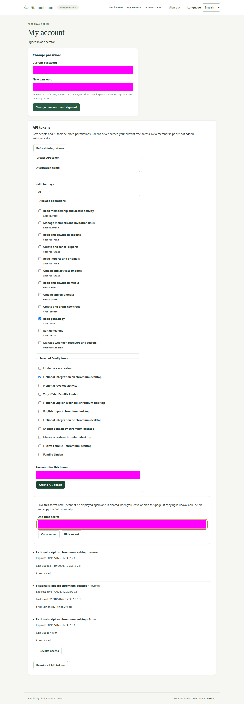
These are current behavior, not performance targets for every possible future edition. A MiB/GiB is the file-size unit used by the interface.
| Area | Current boundary |
|---|---|
| Diagram | 200 unique people; 1,000 relationship lines; generation depths 0–8 |
| Diagram neighborhood | 400 fetched neighbors per person; 20 contextual groups; 20 explicit local expansions |
| Branch history | Up to 30 preceding branch states |
| Genealogy import | 8 MiB; 2,000 people; 100,000 physical lines; 16,384 characters per line; nesting depth 64; bounded interpretation budget |
| Import review | Complete issue totals, up to 200 detailed issues and 20 preview people |
| Import capacity | Five new runs per account/hour; twenty pending runs installation-wide; 512 MiB retained originals installation-wide |
| Media originals | 10 MiB per file; JPEG/PNG up to 16 million pixels and 16,000 pixels in either dimension; PDF attachment |
| Media input package | 32 MiB compressed; 100 entries; 128 MiB expanded; 10 MiB per file; expansion ratio at most 100:1 |
| Media accounting | 1 GiB logical original allowance installation-wide; retained/deleted/candidate records still count, and shared references can count conservatively |
| Export | 2,000 people; 50,000 objects; up to 64 MiB packaged original media; ten new jobs per account/hour; twenty queued jobs installation-wide |
| Export downloads | Expire after 24 hours; invalidated sooner by tree/access changes |
| Deleted-people list | Latest 100 deletions; no general physical-purge facility |
| Invitations / password recovery | Single use; 48 hours / 30 minutes respectively |
| External-tool credentials | 1–365-day expiry; twenty active credentials per account; up to 100 initially selected trees per credential |
| Notification subscriptions | Ten non-revoked subscriptions per tree; delivery records retained 30 days |
Cancelled and failed import originals/reports remain retained rather than automatically expiring. Deleted media are not automatically physically erased. The current application should not imply otherwise merely because an item disappears from an active view. Stored research survives an ordinary application restart; browser sessions do not.
| Capability | Boundary of the current release |
|---|---|
| Genealogy diagram PDF generation | No ancestor/descendant/family PDF generator, print preview or poster/tiling workflow |
| Complete portable tree archive | No lossless tree archive carrying all history, permissions, claims and application settings |
| Full migration from an existing installation | GEDCOM/media transfer has explicit losses; it is not complete installation migration |
| Import into a populated tree or merge | No incremental merge, duplicate reconciliation or cross-tree synchronization |
| Broader GEDCOM support | ANSEL, GEDCOM 7, GEDZIP, all vendor extensions and arbitrary standard structures are not supported |
| Universal source-system compatibility | Synthetic consumer checks do not prove complete real-family MyHeritage migration |
| Complete alternative-hypothesis system | Competing event/relationship groups are unfinished; existing name/date alternatives remain usable |
| Research-quality work queue | Some validation/findings exist; a complete persistent accept/defer/recheck workflow is unfinished |
| General undo and advanced trash | No arbitrary rollback, automatic restoration of connections, configurable purge or complete whole-tree deletion |
| Public/guest sharing | View links require authorized sign-in; anonymous/expiring public genealogy shares are unfinished |
| Full account and collaboration suite | Expanded provisioning, automatic email invitations/recovery, comments and reader change requests remain unfinished |
| More diagram styles | Fan, butterfly, sun, all-in-one and family-book layouts are not available |
| Built-in discovery services | No DNA analysis, automatic matching, face recognition, AI-written biographies, commercial records search or geocoding |
| Broader language/quality claims | More languages, full accessibility certification, physical-device certification and large-scale performance acceptance are not established |
These boundaries retain their original priority where the approved baseline calls them core work. They are not all optional enhancements. The specification of the current release must not silently convert a partial implementation into completion of the approved product.
| Term | Meaning in this specification |
|---|---|
| Account | A collaborator's access to the application |
| Person | A family-history record; it does not require an account |
| Tree | A separate collection of genealogy and memberships |
| Branch | A view of part of a tree, not a copy of its records |
| Focus | The person from whom the displayed branch is derived |
| Selection | The person whose details are currently open |
| Home person | A personal or shared preferred starting person |
| Family context | An ordered grouping of people and existing connections; grouping creates no parentage |
| Assertion / claim | One recorded statement about a person or fact, which may have alternatives |
| Preferred value | The assertion chosen for display; not a verdict of truth |
| Assessment | A research judgment about an assertion: unassessed, supported, disputed or rejected |
| Source | A reusable description of underlying research material |
| Citation | A specific reference or quotation from a source, attached to explicit targets |
| Provenance | Where information came from and who entered or changed it |
| Shared event | One event record associated with multiple participants |
| Media assignment | A link between a file and a research record, with an explicit meaning |
| Original | Unchanged imported file or uploaded media bytes |
| GEDCOM | A genealogy exchange format with defined representational limits |
| Export | A generated view of permitted current research in an exchange format |
| Backup | Recovery material for an installation, distinct from an exchange export |
| Token | A named, limited and expiring credential for an external tool |
| Webhook | A signed notification sent to an explicitly configured receiving service |
These examples state observable behavior for a handoff or future parity review. They are not a report that these scenarios were newly executed for this document. All example data must remain fictional. Requirement relationships refer to the existing baseline; integrations also have approved amendments.
| Example | Given / action | Expected observable result | Requirement relationship |
|---|---|---|---|
| A01 — closed trees | A signed-in user belongs only to tree A and opens a link to tree B | No genealogy from B is disclosed and no new membership is created | RECHT-02; SICHT-01–04 |
| A02 — independent export rights | A viewer without export rights receives an export grant | Export becomes available within current visibility; editing remains unavailable | RECHT-04; SICHT-06 |
| A03 — operator separation | An operator has no membership of a private tree | Account administration does not provide that tree's genealogy or access activity | RECHT-03 |
| A04 — unknown people | An editor creates an unnamed person with explicit confirmation | Empty names and unknown status remain; no invented dates or parents appear | ZIEL-05; PER/NAM/DAT |
| A05 — navigation | Select another person, then explicitly focus their branch and return | Selection and focus remain distinct; returning restores the previous view without duplicating people | GRUND-02; NAV |
| A06 — shared home | A manager changes shared home while another member has a personal home | The personal home remains the user's preference; the shared default is available when appropriate | BAUM-05; ADR-015 locale/home amendment |
| A07 — explicit parentage | Add an adoptive parent to a person who already has a biological parent | Both connections retain their explicit types; neither replaces the other by inference | BEZ; SEX-02 |
| A08 — ancestry loop | Attempt to make a person their own biological ancestor | The connection is refused and existing people remain unchanged | BEZ-09–11 |
| A09 — sibling grouping | Group two existing children with no known parent | The ordered context contains the children and no fabricated parents or partnership | BEZ; GRUND-03 |
| A10 — incomplete date | Enter only a year; separately preserve “03/04” as literal wording | No month/day is invented and no ambiguous date is silently interpreted | DAT-01–05 |
| A11 — evidence preference | Mark a disputed date preferred and attach a supporting citation | Display preference, assessment and citation effect remain independent | QEL; ERE-06–07 |
| A12 — reusable citation | Detach one of two targets from a citation | The citation, source and other target remain | QEL |
| A13 — confidential shared material | Attach a citation or medium to both visible and inaccessible targets | An ordinary reader cannot retrieve the shared content through the visible target | SICHT-03/08 |
| A14 — shared event | Edit a marriage that has two participants | One shared record changes for both; affected-person confirmation is explicit | ERE; KOLL |
| A15 — note safety | Enter markup that resembles executable content or an embedded remote image | It is not executed or automatically fetched | NOT; ROB-02 |
| A16 — unchanged original | Choose a portrait crop, then download the original | Preview uses the crop; downloaded original retains its bytes | MED |
| A17 — explicit media matching | A ZIP contains two equal basenames in different paths | A manager must choose the full-path candidate; no automatic guess occurs | MED; IMP |
| A18 — staged import | Upload a supported GEDCOM into an empty tree | The review exists before genealogy becomes active; explicit confirmation is required | IMP-04–16 |
| A19 — blocked import | Upload a file containing an unsupported standard structure | A blocking explanation appears; no partial family is activated | ZIEL-03; IMP |
| A20 — cancellation | Cancel an unactivated import | No proposed people are added; original and report remain private and retained | IMP; JOB |
| A21 — current-state export | Correct a name, remove a connection and delete a person before export | Current permitted research is exported; obsolete raw input does not revive removed material | EXP-01–08 |
| A22 — stale export | Edit the tree after creating an export | The previous result is unavailable for download; a fresh review is required | RECHT-02; EXP; ADR-017 |
| A23 — concurrent edit | Two users edit the same record and one saves first | The other receives a conflict with draft retained and explicit comparison/retry | KOLL-01–05 |
| A24 — last owner | The only active owner tries to leave or demote themselves | The action is refused until another active owner is appointed | RECHT-01 |
| A25 — restoration | Delete a person, then restore them | Person returns; former active connections do not return automatically | LOE; ADR-017 |
| A26 — language | Switch language with an unsaved form and a literal historical date | Labels change; draft, date wording and research content remain | NF-03 as amended by ADR-011–015 |
| A27 — token boundaries | Issue a read-only selected-tree credential, then join another tree | Credential cannot edit or read the newly joined tree automatically | Integration amendment; issues 42–46 |
| A28 — revoked queued work | Revoke an initiating credential before a queued export is published | Background work cannot silently continue with broader authority | Integration amendment; issues 45–46 |
| A29 — minimal notifications | Change a fictional person and inspect the notification received | Notification identifies tree/revision or job state without names or research values | Integration amendment; issue 48 |
| A30 — recovery boundary | Restore a complete fictional installation backup | Research and original files remain consistent; old tool credentials do not silently reactivate | BETR; integration recovery amendment |
The immutable functional specification and decision register remain the source of approved requirements and amendments. This document describes a release snapshot; it neither replaces them nor marks their acceptance register passed. A requirement family listed below can be only partly implemented.
| This document | Relevant baseline families / amendments | Important qualification |
|---|---|---|
| Purpose and boundaries | ZIEL-01–06; GRUND-01–05 | Closed research workspace; no automatic cross-tree synchronization |
| Accounts, roles and privacy | KONTO-01–06; RECHT-01–04; SICHT-01–08; ADR-016 | Current delete/restore permission is management-only; broader baseline workflows remain unfinished |
| Trees and navigation | BAUM; NAV; BAUMANS; SUCHE; UX; shared-home amendment | Bounded current graph; advanced layout and broader search are unfinished |
| People, dates and connections | PER; NAM; SEX; DAT; BEZ; PART; FORM | No complete competing-relationship hypothesis editor |
| Evidence and uncertainty | QEL; ERE-06–07; ADR-04 | Name/date alternatives do not establish complete event-claim grouping |
| Events and details | ERE; NOT; KON; EXT; ADR-014 | Imported type/category/subject and editor limits constrain changes |
| Media | MED; SICHT; ADR-017 | Private originals and explicit matching; no broad physical purge |
| Import | IMP; ZIEL-03; ADR-007/008/010/017 | Bounded profiles; preserved original does not mean every field is semantically supported |
| Export | EXP-01–08; SICHT-05–06; ADR-017 | Current-state GEDCOM/media, not a full archive or PDF feature |
| Collaboration and recovery | KOLL; HIST; LOE; JOB; FEHLER; BETR | Partial trash/history/jobs; operational backup is separate from portable archives |
| Language and accessibility | NF-03; UX; ADR-011–015 | English/German implemented behavior; no blanket accessibility certification |
| Connected tools | Approved integration amendment, issues 42–48 | Personal credentials and minimal signed notifications; delegated authorization remains future work |
The decision register currently contains two entries labelled ADR-015: one for locale/shared-home behavior and a later one for integration access. References here identify the subject to avoid confusing those entries. This documentation task does not renumber historical decisions.
The current README, release 0.15 verification record, active behavior descriptions, selected current application controls/services and decision amendments were compared. Older milestone reports were used for behavior that later increments retain, not as a current list of missing features. In particular, earlier statements that export, media, general event editing or the shared tree home were unavailable are superseded.
| Evidence | Purpose |
|---|---|
| Current feature overview and documentation index | Establish the current release and feature boundary |
| Release 0.15 verification | Identify historical executed evidence, screenshot release and explicit remaining limits |
| English user guide | User-facing journeys; its older opening version statement is superseded by later sections/release evidence |
| People and relationships, evidence and contexts | Core rules, preservation and shared-record permissions |
| Interactive workspace, locale and shared home | Navigation behavior, bounds and current home-person precedence |
| Event/detail editing | Shared statements, notes, contacts and draft handling |
| Access management | Current membership boundaries, last-owner protection and activity views |
| Media and export, current exchange profile | Files, deletion/restoration, export semantics, retention and input/output bounds |
| Import profile foundation, additional events, literal compatibility | Earlier import rules retained or explicitly extended by later profiles |
| Integration behavior, integration guide | Tool access, current-authority checks, notification delivery and recovery |
| Browser review and screenshot provenance | Origin of the fictional illustrations and their existing capture evidence |
The new document was reviewed as documentation. The examples in Appendix A have not been newly executed as a separate acceptance suite. Historical release evidence is not a claim that all original core obligations passed. No real-family import or complete real-data migration was performed for this specification.
Figures 1–12 are unmodified image files selected from the release 0.15 Chromium desktop review gallery. Each source belongs to the same recorded fictional release run. Their checksums, original capture names, language, dimensions and captions are recorded in the linked provenance manifest. PDF layout may continue a long image on subsequent pages at a readable scale; it does not alter the original stored screenshot.
Diagrams 1–3 are newly authored explanations of observable workflows. They use invented examples and do not depict a proposed user interface. They do not establish additional product functionality.
This handoff does not certify arbitrary third-party genealogy files, complete real-family migration, physical mobile devices, all assistive technologies, large-tree performance or every authorization race. Those remain explicit verification obligations where applicable. A future implementation should use the behavior and requirement relationships here while recording its own executed evidence.